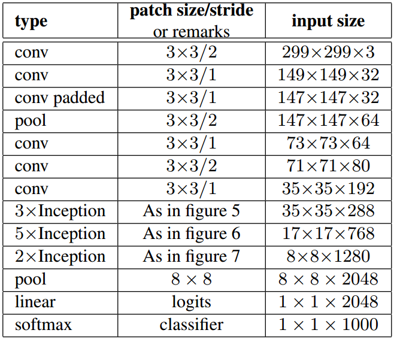

In Inception-v4, Szegedy et al. describe Inception-v2:
“Later the Inception architecture was refined in various ways, first by the introduction of batch normalization (Inception-v2) by Ioffe et al.”
That paper by Ioffe et al. describes their model like this:
“The main difference to [Inception-v1] is that the 5 × 5 convolutional layers are replaced by two consecutive layers of 3 × 3 convolutions with up to 128 filters.”
Rethinking the Inception Architecture for Computer Vision has a section (Section 6) titled “Inception-v2”. It describes a network with many more changes than the Batch Normalization paper listed compared to Inception-v1:
“Here we are connecting the dots from above and propose a new architecture with improved performance on the ILSVRC 2012 classification benchmark. The layout of our network is given in table 1. Note that we have factorized the traditional 7 × 7 convolution into three 3 × 3 convolutions based on the same ideas as described in section 3.1. For the Inception part of the network, we have 3 traditional inception modules at the 35×35 with 288 filters each. This is reduced to a 17 × 17 grid with 768 filters using the grid reduction technique described in section 5. This is is followed by 5 instances of the factorized inception modules as depicted in figure 5. This is reduced to a 8 × 8 × 1280 grid with the grid reduction technique depicted in figure 10. At the coarsest 8 × 8 level, we have two Inception modules as depicted in figure 6, with a concatenated output filter bank size of 2048 for each tile. The detailed structure of the network, including the sizes of filter banks inside the Inception modules, is given in the supplementary material, given in the model.txt that is in the tar-file of this submission.”
I can’t find this model.txt file anywhere on the internet, but they present this table describing Inception-v2:

“Rethinking Inception” also includes a table that has separate entries for: